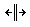
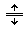

Thẻ <frame> trong HTML
- Để dễ dàng tiếp thu được bài hướng dẫn này thì trước tiên bạn nên xem qua thẻ <frameset>
1) Cách sử dụng thẻ <frame> trong HTML
- Thẻ <frame> xác định một khung trong một bộ khung, nó dùng để nhúng một tài liệu nào đó vào trang web hiện tại (tài liệu ở đây rất đa dạng, có thể là một trang web khác, tập tin pdf, tấm hình, ....)
- Thẻ <frame> bắt buộc phải được đặt bên trong phần tử <frameset>
- Để sử dụng thẻ <frame>, chúng ta dùng cú pháp như sau:
<frame src="đường dẫn đến tài liệu mà bạn muốn nhúng vào trang web">
<frameset cols="40%,60%">
<frame src="http://webcoban.vn/file/ban-khai-nhan-khau.pdf">
<frame src="http://webcoban.vn/css/default.html">
</frameset>
2) Các thuộc tính của thẻ <frame>
- Thẻ <frame> có ba thuộc tính cơ bản.
- Dưới đây là bảng mô tả sơ lược về ba thuộc tính đó:
| src | Xác định đường dẫn đến tài liệu mà bạn muốn đặt vào khung |
| scrolling | Xác định việc có nên hiển thị các thanh scroll hay không |
| noresize | Ngăn chặn hành động kéo thả làm thay đổi kích thước của phần tử <frame> |
2.1) Thuộc tính src
- Thuộc tính src dùng để xác định đường dẫn đến tài liệu mà bạn muốn đặt vào khung.
(Đường dẫn đến tài liệu có thể là đường dẫn tương đối hoặc đường dẫn tuyệt đối)
<frameset cols="40%,60%">
<frame src="http://webcoban.vn/file/ban-khai-nhan-khau.pdf">
<frame src="../css/default.html">
</frameset>
2.2) Thuộc tính scrolling
- Nếu tài liệu được nhúng vào có kích thước lớn hơn phần tử <frame>, thì khi đó mặc định phần tử <frame> sẽ hiển thị các thanh scroll (ngang hoặc dọc) giúp ta kéo lên xuống hoặc sang trái phải để có thể xem hết nội dung của tài liệu được nhúng vào.
- Từ đây, thuộc tính scrolling giúp xác định việc có nên hiển thị các thanh scroll hay không.
- Thuộc tính scrolling có thể có một trong ba giá trị: auto, yes, no
- Giá trị auto (đây là giá trị mặc định): thanh scroll sẽ tự động hiển thị khi nào kích thước của tài liệu được nhúng vào lớn hơn kích thước của phần tử <frame>
- Giá trị yes: thanh scroll sẽ luôn luôn hiển thị mặc cho có cần thiết hay không.
- Giá trị no: thanh scroll sẽ không bao giờ được hiển thị.
<frameset cols="50%,50%">
<frame src="http://webcoban.vn/css/default.html" scrolling="yes">
<frame src="http://webcoban.vn/css/default.html" scrolling="no">
</frameset>
2.3) Thuộc tính noresize
- Mặc định, khi ta dí chuột vào các cạnh của một phần tử <frame> thì nó sẽ hiện lên con trỏ giống như  hoặc  giúp ta có thể kéo thả để thay đổi kích thước của phần tử <frame>
- Từ đây, thuộc tính noresize dùng để xác dịnh việc ngăn chặn hành động kéo thả làm thay đổi kích thước của phần tử <frame>
<frameset cols="50%,50%">
<frame src="http://webcoban.vn/css/default.html" noresize>
<frame src="http://webcoban.vn/css/default.html" noresize>
</frameset>